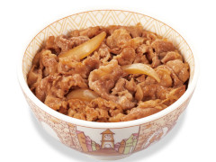
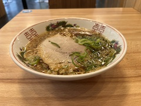
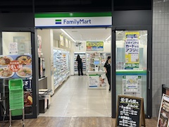

Lunch Information
If you attend the conference for the whole period, we strongly recommend you to choose the registration option with lunch boxes for five days, because there are only a few eating places open in the KSU campus during the conference.
The eating places that will be open in the KSU campus during the conference are the following:
- Sukiya
- Ichibariki
- (Convenience store) FamilyMart
Restaurant
Sukiya (beef bowl/curry/etc.)
Located on the 1st floor of Shinrikan (Campus Map 9)
Open: 11:00—15:00

Ichibariki (ramen)
Located on the 1st floor of Heirakukan (Campus Map 13)
Open: 11:00—16:00

Shop
FamilyMart (convenience store)
Located on the 1st floor of Tenchikan (Campus Map 1)
Open: 08:00—15:00
You can buy rice balls, sandwiches, bento boxes, drinks, snacks, etc. They also sell some daily necessities.
There is a lounge in front of the store where you can eat food you have bought or brought with you.

Maruzen (stationery, PC accessories)
Located on the 1st floor of Tenchikan (Campus Map 1)
Open: 10:00—15:00

Book Center Ascella
Located on the 1st floor of Yuhikan (Campus Map 7)
Open: 10:00—16:00